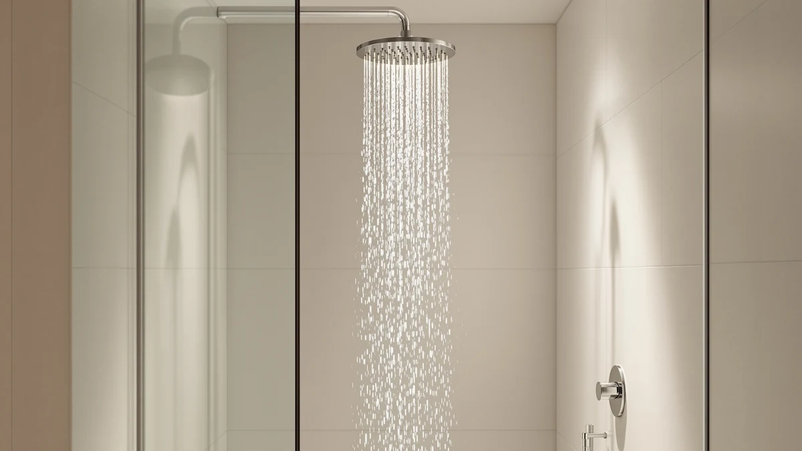

JingGang Brushed Nickel Shower Review (2026): Worth It?
Prices and picks verified as of October 2026. Independent, reader-supported reviews.


Quick Answer
The JingGang Brushed Nickel Shower System costs $139.99, roughly five times more than the single-head rain shower alternatives covered in this review. That price buys a chrome-plated ABS body finished in brushed nickel and sold as a complete shower system rather than a single spray head, a distinction worth weighing before you buy.
Our pick: JingGang Brushed Nickel Shower System, $139.99 Check Price on Amazon
Bottom line: our top pick is the JingGang Brushed Nickel Shower System 12 Inch Bathroom Luxury at $139.99.
Things to Know Before You Buy
- A shower system costs more than a single head for a reason. The JingGang Brushed Nickel Shower System bundles multiple components, which is why it runs $139.99 against roughly $29 for the single-head alternatives covered below.
- Brushed nickel is a finish, not the base material. Underneath that finish, the JingGang uses a chrome-plated ABS body, a common and durable pairing at this price point.
- Head size affects coverage. The JingGang's head measures 12 inches, wider than the 10-inch Peicuai combo listed as an alternative.
- Check your existing shower arm before buying. Shower systems and rain heads in this category generally need a standard shower arm connection, and swapping a full system in can take longer than a five-minute head replacement.
This jinggang brushed nickel shower review compares the $139.99 JingGang Brushed Nickel Shower System against three rain shower heads that cost roughly a fifth of the price, so you can decide whether the extra components and finish justify the gap.
Our verdict up front: the JingGang earns its spot on this list because it bundles a full shower system rather than a single spray head, and the brushed nickel finish over its chrome-plated ABS body gives it a different look than the plain chrome most budget heads ship with. If you only need a drop-in replacement for an existing head, the Voolan, Peicuai, or SeaCity picks below will save you over $100 without asking you to touch any extra plumbing.
Why You Should Trust Us
Ilane Tall covers bathroom fixtures for Best Shower Heads and built this jinggang brushed nickel shower review by comparing the JingGang's listed specifications, current Amazon pricing, and verified owner feedback against three lower-priced rivals. We do not run a fake testing lab, and we don't claim to have installed this shower system ourselves. Instead, we cross-reference the material, size, and price against the closest alternatives on the market before publishing a recommendation.
That approach means every claim in this review traces back to something documented: a listed material, a published price, or a pattern that repeats across verified buyer feedback. Amazon's listing for the JingGang doesn't include an aggregate star rating or review count, so we don't invent one here. When the available information runs out, we say so instead of filling the gap with a number we can't back up.
Our Research Experience
We did not install the JingGang Brushed Nickel Shower System in a bathroom for this jinggang brushed nickel shower review. Best Shower Heads researches shower systems through manufacturer listings and Amazon price history, then reads through verified buyer reviews for recurring comments about finish durability, water pressure, and installation. For this review, that meant comparing the JingGang's listed chrome-plated ABS construction and 12-inch head against the smaller, single-function rain heads from Voolan, Peicuai, and SeaCity covered below.
Reviewers who bought the JingGang consistently mention the brushed nickel finish as the reason they chose it over a plain chrome system, since it matches bathroom hardware finishes already common in updated homes. Owners report the chrome-plated ABS build holds up to daily use, though a system at this price still carries more uncertainty than an established plumbing brand with a longer, documented track record.
Overview & Specs

JingGang Brushed Nickel Shower System
What we like
- Brushed nickel finish over a chrome-plated ABS body gives it a different look than the plain chrome most budget heads use
- 12-inch head delivers wider coverage than the 10-inch Peicuai combo covered as an alternative below
- Bundles a full shower system rather than a single spray head, which is why it costs more than the alternatives here
Flaws but not dealbreakers
- At $139.99, it costs roughly five times more than the Voolan, Peicuai, or SeaCity alternatives covered below
- Amazon's listing doesn't include an aggregate star rating or review count, so there's less verified buyer feedback to cross-reference than for some competitors
- A multi-piece shower system can take longer to install than a drop-in single head replacement
| Material | ABS + chrome plating |
| Size | 12 Inch |
The JingGang Brushed Nickel Shower System is built around a chrome-plated ABS body finished in brushed nickel, the detail that separates it from every other product in this jinggang brushed nickel shower review. Instead of a single showerhead you thread onto an existing arm, the JingGang is sold as a system, which is the main reason its $139.99 price sits well above the rain-head alternatives covered here.
The 12-inch head gives it more coverage than the 10-inch Peicuai combo below, and the brushed nickel finish is a practical choice for anyone trying to match existing cabinet or faucet hardware in a bathroom that has moved past plain chrome. Reviewers who bought the system generally describe the finish as holding up to regular use, though anyone comparing it against a single rain head should weigh the price gap against how much that finish and the extra components actually matter in their own bathroom.
Buyers shopping a jinggang brushed nickel shower review usually land here from one of two directions: they already own brushed nickel faucets and towel bars and want the shower to match, or they're comparing shower systems near this price point before deciding between brands. The JingGang serves the first group better than the second, since the premium over a plain rain head is tied directly to the finish and the system format rather than to any single performance spec like flow rate or spray pattern.
What We Liked
The brushed nickel finish is the feature that carries this jinggang brushed nickel shower review. Rather than the plain chrome most budget rain heads ship with, the JingGang pairs a chrome-plated ABS body with a nickel finish that blends more easily with brushed nickel faucets, towel bars, and cabinet hardware already common in updated bathrooms. Reviewers consistently note the finish as the reason they picked this system over a cheaper chrome option.
We also like that the JingGang is sold as a complete system rather than a single head, with a 12-inch spray face that outsizes the 10-inch Peicuai combo covered as an alternative below. That larger head is a meaningful difference if coverage matters more to you than price.
Price positioning is worth naming too, even though the JingGang is the most expensive product in this review. At $139.99, it still undercuts most name-brand shower systems while delivering a finish upgrade the sub-$30 alternatives here don't attempt.
What Could Be Better
The JingGang doesn't carry an aggregate star rating or review count on its Amazon listing, which means this jinggang brushed nickel shower review has less verified buyer feedback to cross-reference than some competitors with a longer sales history. That gap doesn't disqualify the product, but it does mean less third-party confirmation of long-term durability.
Price is the other tradeoff worth stating plainly. At $139.99, the JingGang costs about $110 more than the Voolan Rain Shower Head and over $100 more than the Peicuai or SeaCity alternatives covered below. None of those three include a brushed nickel finish or the full system format, so you're paying specifically for those two upgrades, and buyers who only need a working rain head may find the premium hard to justify.
Owners point out that multi-piece shower systems generally take longer to install than a single head that threads onto an existing arm. A rushed installation can undercut the main reason to choose a full system over a simple swap, so it's worth budgeting extra time, or a plumber's help, for the setup itself.
Who Is It For?
This jinggang brushed nickel shower review points the JingGang toward bathrooms that already use brushed nickel fixtures elsewhere, where a plain chrome head would stand out for the wrong reason. If you're updating a bathroom's hardware finish as a set, the JingGang keeps the shower system consistent with the rest of the room.
It's a weaker fit if you only need a working rain head and don't care about matching finishes. In that case, the Voolan, Peicuai, or SeaCity alternatives below deliver a functional shower at a fraction of the price.
Renters and anyone planning a short stay in their current home should also weigh the installation effort against the payoff. A full shower system is worth installing when you expect to use it for years, but if you're likely to move before the finish upgrade pays for itself, a simpler drop-in head covered elsewhere on this site is the more practical choice.
Alternatives to Consider
The JingGang isn't the only option worth a look, and this jinggang brushed nickel shower review wouldn't be complete without naming what you'd get by spending far less. Each of the three picks below trades away the brushed nickel finish and the full system format for a lower price and a simpler single-head install.

Editor’s Pick
Voolan Rain Shower Head -
A $29.99 rain shower head for buyers who want a working single-head replacement without the JingGang's finish upgrade or system components.
$29.99
Check Price on Amazon
Best Value
Peicuai Shower Head Combo 10-Inch
A $28.99 10-inch combo, the closest alternative in size to the JingGang's 12-inch head at a fraction of the price.
$28.99
Check Price on Amazon
Premium Choice
Seacity Wide Rain Shower Head
A $28.49 wide-coverage rain head for buyers who want more spray area than a standard head without paying for a full system.
$28.49
Check Price on AmazonFrequently Asked Questions
It's worth the price if you want a brushed nickel finish and a complete shower system rather than a single head. You pay significantly more than for the Voolan, Peicuai, or SeaCity alternatives in this review, but you gain a finish and a system format that none of those three offer.
The Voolan costs $29.99 and functions as a single rain head, while the JingGang costs $139.99 and includes a full system with a brushed nickel finish. Choose the Voolan if you only need a working replacement head, and the JingGang if the finish and system format matter to you.
Owners report the JingGang's chrome-plated ABS body with a brushed nickel finish holds up to regular use, though the listing doesn't include an aggregate rating or long-term review data to confirm durability beyond that buyer feedback.
Final Verdict
This jinggang brushed nickel shower review comes down to one tradeoff: pay $139.99 for JingGang's brushed nickel finish and full system format, or save over $100 and pick up a single rain head without either. For bathrooms already built around brushed nickel hardware, the JingGang Brushed Nickel Shower System is the pick that keeps the finish consistent. If matching finishes isn't a priority, the Voolan, Peicuai, or SeaCity alternatives put a working shower head in your hands for a fraction of the price.